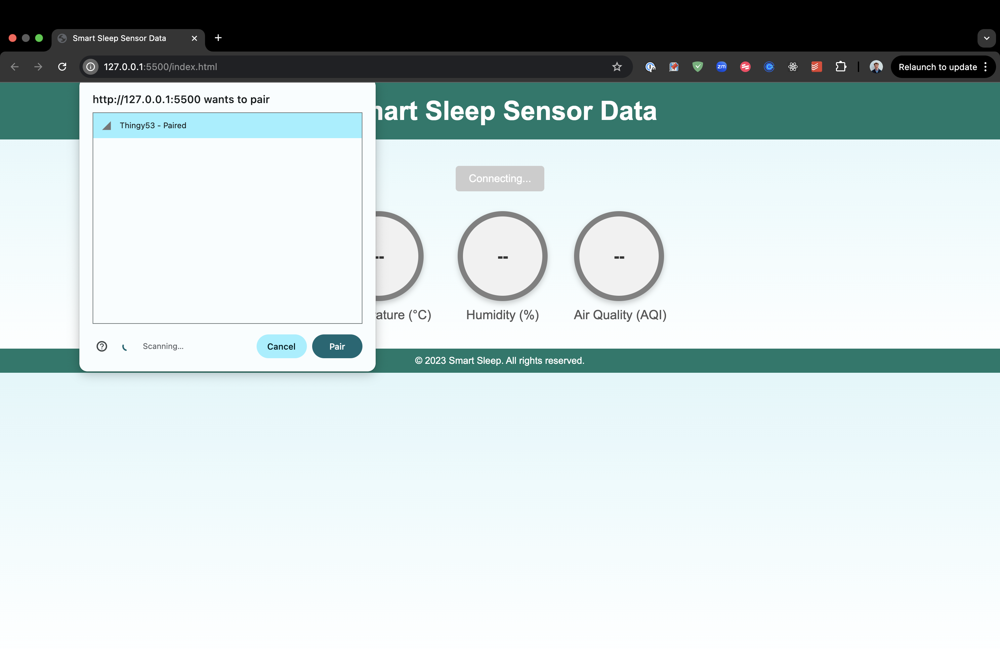
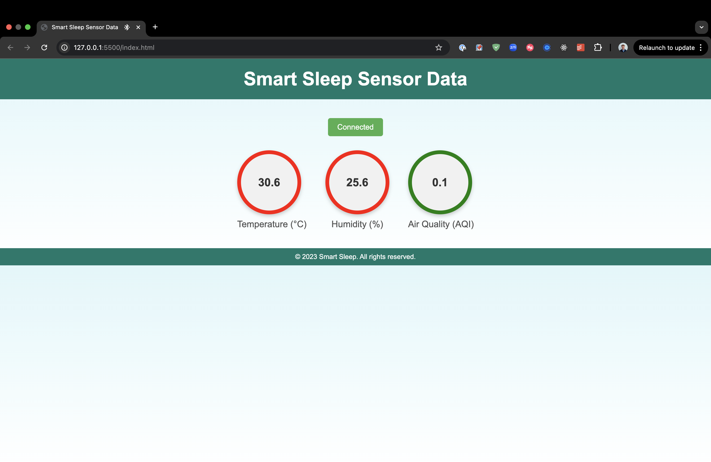
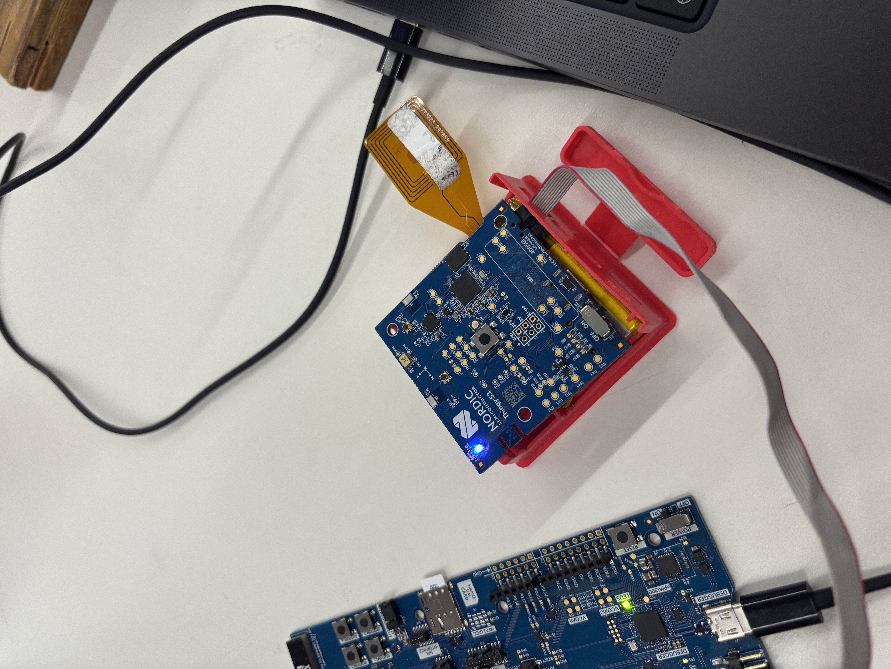
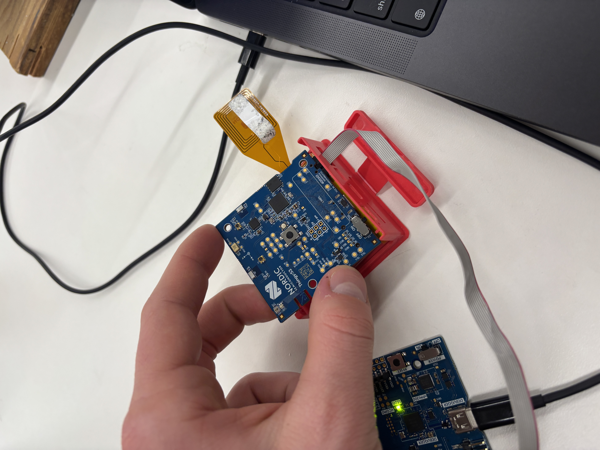

Week 9: Radio, WiFi, Bluetooth (IoT)
This week, the group project with Marcus focused on developing an IoT-based environmental sensing device to measure temperature, pressure, and humidity with bluetooth, with the goal to assess and maintain optimal sleeping conditions for a user. This involved integrating Bluetooth Low Energy (BLE) connected directly with a computer website and a Thingy53 board using the Bosch BME688 sensor.
Setting Up the Environment
My setup involved configuring Zephyr OS, a platform to program the nRF53 MCU. It was particularly useful for enabling essential Bluetooth configurations, sensor functionalities, and controlling PWM for LEDs.
I first setup the project configuration file to enable the necessary features for the project and set the device name to "Thingy53".
CONFIG_BT=y
CONFIG_BT_PERIPHERAL=y
CONFIG_BT_DEVICE_NAME="Thingy53"
CONFIG_SENSOR=y
CONFIG_PWM=y
CONFIG_BME680=y
CONFIG_IPC_SERVICE=y
CONFIG_LED_PWM=y
CONFIG_BOARD_ENABLE_CPUNET=y
Sensor Integration and Data Acquisition
I then integrated the BME688 sensor, which can provide accurate environmental data. The Zephyr-based code was stored in this (main.c) file, whichcontinuously reads the temperature, humidity, and pressure values as listed here:
sensor_sample_fetch(bme);
sensor_channel_get(bme, SENSOR_CHAN_AMBIENT_TEMP, &temperature);
sensor_channel_get(bme, SENSOR_CHAN_HUMIDITY, &humidity);
sensor_channel_get(bme, SENSOR_CHAN_PRESS, &pressure);
Device Connectivity and BLE Comms
The Thingy53 communicates over BLE, transmitting the environmental sensor data to our custom-built web interface. Below is the web interface used to display real-time sensor values:
Connecting to the Thingy53 via BLE.
Real-time Data Display
The web application visually shows the environmental metrics using these circles that changes colour according to the optimal temperature (16-20°C) and humidity (30-50%) ranges, providing immediate visual feedback on the current conditions.
Displaying real-time temperature, humidity, and air quality index.
Hardware Integration and Testing
I used PWM-driven RGB LEDs on the Thingy53 to indicate environmental conditions visually, going from blue (too cold), to green (optimal), and to red (too hot).
RGB LED indicating environmental status.
The BLE and sensor data was extensively tested, both through the embedded device outputs and visually on the web application. Since it was battery powered, I could carry the device with me into different environments to test it properly. One issue we had was the temperature sensor seemed to be offset by a few degrees and was too warm. So in future I would look at calibrating the sensor more accurately.

Serial debugging output and website data display.
Device Assembly and Practical Testing
The fully assembled and operational Thingy53 ble device. I used my finger to test the temperature sensor fluctuations:
Thingy53 device warming up and changing sensors.
Wrap-up
This week's group project was successful in creating an IoT system capable of monitoring and visualizing environmental data using bluetooth as our communication method. This application could be useful for ensuring optimal sleep conditions. Future improvements would be on the calibration of the temperature sensor and maybe the power consumption of the device?